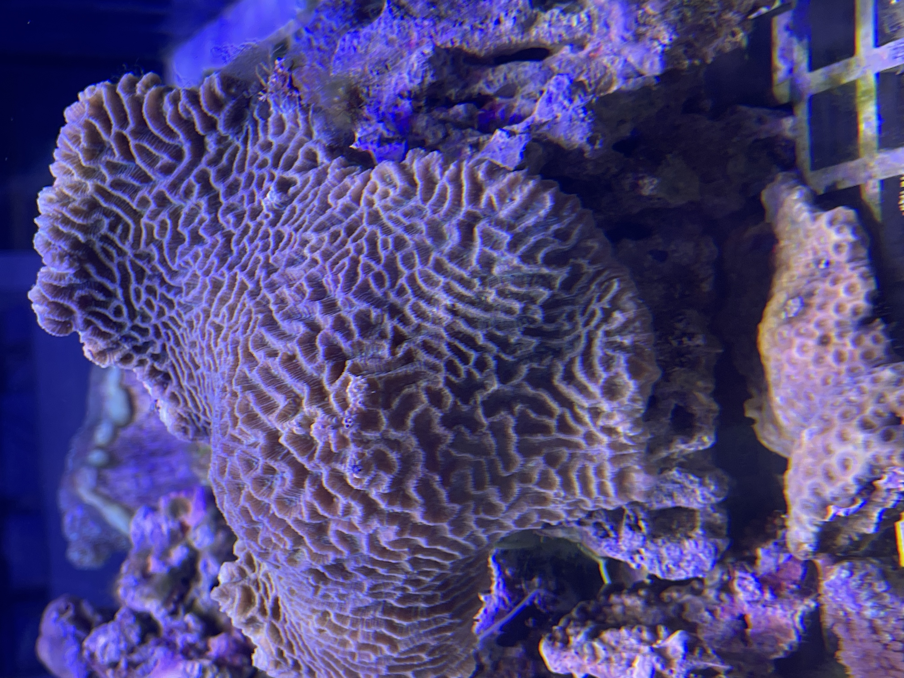
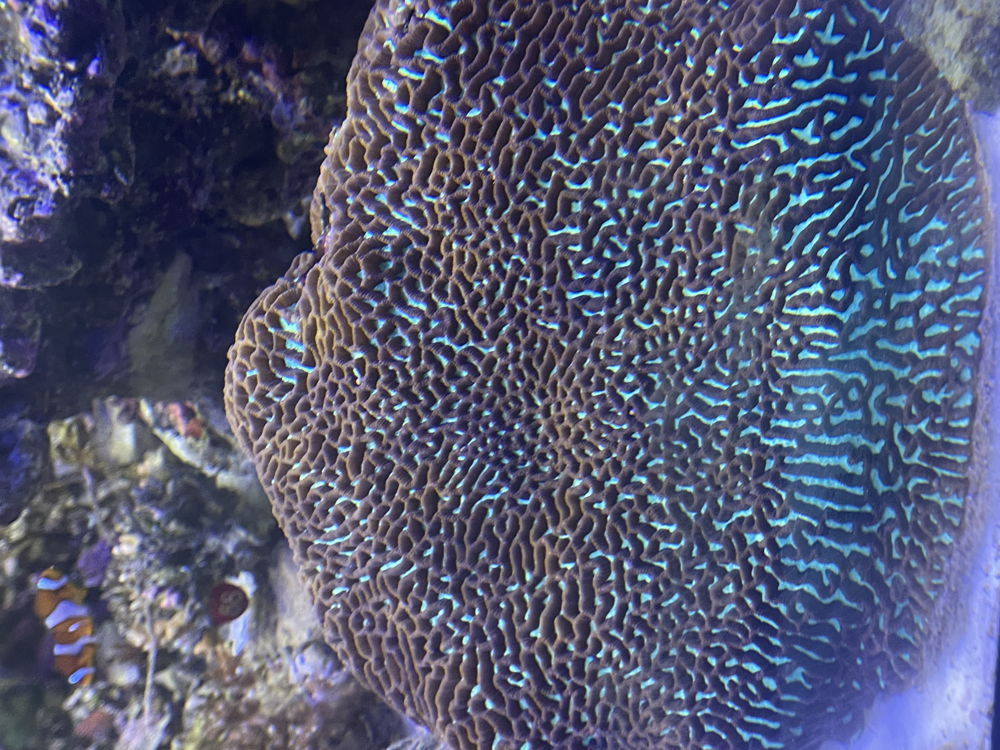

Morphology
Corallites share thick walls that fuse into sinuous valleys, each bordered by septa with blunt teeth. Colonies grow as domes or sprawling plates with annual banding visible in X-rays.
Platgyra brain corals sculpt winding valleys of skeletal ridges that can span meters across. Their living tissue forms neon grooves that glow under blue light, making them icons of massive reef frameworks.


Corallites share thick walls that fuse into sinuous valleys, each bordered by septa with blunt teeth. Colonies grow as domes or sprawling plates with annual banding visible in X-rays.
Platgyra occupies fore-reef slopes, channel shoulders, and semi-turbid lagoons across the Indo-Pacific, typically between 4 and 35 meters where currents deliver suspended food.
Massive skeletons stabilize reef crests and provide crevices for cryptic fishes. Their ridged surfaces slow water flow, trapping plankton and fine sediments that nourish neighboring filter feeders.